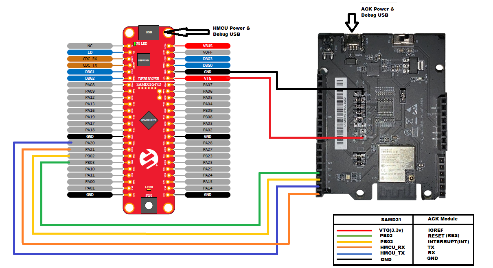

Amazon Alexa Connect Kit (ACK) Microwave Application on SAM D21 Curiosity Nano
Download
Description:
The application demonstrates an integration of Amazon Alexa connect kit (ACK) SDK with host microcontroller SAM D21 and controlling microwave on SAM D21 Curiosity Nano.
This following bullet points provides links to the detailed topics:
- Modules/Technology Used
- Hardware Used
- Software/Tools Used
- Hardware Setup
- Setting up the build platform
- Project file structure
- Steps to program the hex file
- Programming/Debugging Microwave Application Project
- Register your device
- Running the demo
- Comments
Modules/Technology Used:
- Peripheral Modules
- SERCOM
- Systick
- Port
- NVMCTRL
Hardware Used:
- SAM D21 Curiosity Nano Evaluation Kit
- USI MT7697H Development Kit for Alexa Connect Kit - ACK Module
- Connection wires
Software/Tools Used:
This project has been verified to work with the following versions of software tools:
- MPLAB Harmony v3 “csp” repo v3.8.3
- MPLAB Harmony v3 “dev_packs” repo v3.8.0
- MPLAB Harmony v3 “mhc” repo v3.6.5
- MPLAB Harmony 3 Launcher Plugin v3.6.2
- MPLAB X IDE v5.45
- MPLAB XC32 Compiler v2.41
Because Microchip regularly update tools, occasionally issue(s) could be discovered while using the newer versions of the tools. If the project doesn’t seem to work and version incompatibility is suspected, It is recommended to double-check and use the same versions that the project was tested with.
Hardware Setup:
Hardware connections with ACK Module
- Connect Pin “PB02(ACK HOST INTERRUPT Pin)” of SAM D21 Curiosity Nano Evaluation Kit to “INT”(INST) pin of ACK Module
- Connect Pin “PB03(ACK MODULE RESET Pin)” of SAM D21 Curiosity Nano Evaluation Kit to “RESET”(RES) pin of ACK Module
- Connect Pin “PA20(Host MCU TX)” of SAM D21 Curiosity Nano Evaluation Kit to “ACK RX” pin of ACK Module
- Connect Pin “PA21(Host MCU RX)” of SAM D21 Curiosity Nano Evaluation Kit to “ACK TX” pin of ACK Module
- Connect Pin “VTG(Voltage Target)” of SAM D21 Curiosity Nano Evaluation Kit to “IOREF” pin of ACK Module
- Connect common ground between SAM D21 Curiosity Nano Evaluation Kit and ACK Module
- Power the SAM D21 Curiosity Nano Evaluation Kit Evaluation Kit from a Host PC through a Type-A male to Micro-B USB cable connected to Micro-B port (J105)
-
Power the ACK Module from a Host PC through a Type-A male to Micro-B USB cable connected to Micro-B port (DEBUG)

Note: Please contact Amazon for details on the other hardware/equipment required for this demo application.
Setting up the build platform
- Download and extract ACK Device SDK 3.2 from Amazon developer website.
- Copy and paste extracted SAM D21 ACK port folder “samd21_amazon_ack” into ACK device SDK’s user platform folder
<Your ACK SDK Downloaded folder>/ACK_Device_SDK_3.2.202009091708/user/platform
Note
- Make sure you create amazon.com account for downloading the SDK. You would use your Amazon credentials to register your development device (amazon.com account provides an option to register your development device.)
- “ACK Module with MediaTek chipset” is used in these demo’s. make sure you download proper ACK SDK from the Amazon website
Project file structure
- ACK SDK file/directory structure, refer “Readme.txt” in
<Your ACK SDK Downloaded folder>\ACK_Device_SDK_3.2.202009091708\ - SAM D21 ACK port file/directory is as follows
- user/platform/samd21_amazon_ack/
- applications : Contains all the ACK host sample applications built on MPLABX Tools and xc32 compiler
- bootloader : Contains bootloader for over-the-air(OTA) firmware upgrade feature
- hmcu_port : Contains shared host specific platform and OTA files
- ota : Contains OTA source, config and header files
- ack_samd21_cutom_loader.c : Contains bootloader specific code
- ack_samd21_platform.c : Contains SAMD21 platform specific code
- user/platform/samd21_amazon_ack/
Programming hex file:
The pre-built hex file can be programmed by following the below steps.
Steps to program the hex file
- Open MPLAB X IDE
- Close all existing projects in IDE, if any project is opened.
- Go to File -> Import -> Hex/ELF File
- In the “Import Image File” window, Step 1 - Create Prebuilt Project, Click the “Browse” button to select the prebuilt hex file.
- Select Device has “ATSAMD21G17D”
- Ensure the proper tool is selected under “Hardware Tool”
- Click on Next button
- In the “Import Image File” window, Step 2 - Select Project Name and Folder, select appropriate project name and folder
- Click on Finish button
- In MPLAB X IDE, click on “Make and Program Device” Button. The device gets programmed in sometime
- Follow the steps in “Running the Demo” section below
Programming/Debugging Microwave Application Project:
Before proceeding with this step complete “Setting up the build platform” step.
- Open the project (
samd21_amazon_ack/applications/Microwave/firmware/sam_d21_cnano.X) in MPLAB X IDE - Ensure “PKOB nano” is selected as hardware tool to program/debug the application
- Build the code and program the device by clicking on the “make and program” button in MPLAB X IDE tool bar
Register your device
- Register ACK Module with Amazon by following the procedure
- If you successfully registered your device. you should see the status LED on your ACK development board change from white to green.
Running the Demo:
Note: This demo does not have functional running/test steps as the other required hardware/equipment needs to be procured. Please contact Amazon for help on running this demo application.
Comments:
- Microwave application cannot support OTA feature because of limitation of code size. You can migrate to higher memory part in SAMD 21 MCU family.
- Reference Training Module: Getting Started with Harmony v3 Peripheral Libraries on SAM D21 MCUs
- This application demo builds and works out of box by following the instructions above in “Running the Demo” section. If you need to enhance/customize this application demo, you need to use the MPLAB Harmony v3 Software framework. Refer links below to setup and build your applications using MPLAB Harmony.
- This solution is currently available only in US, Canada, and Mexico. Other regions contact Amazon.
Revision:
- v1.2.0 Updated to support Amazon ACK SDK 3.2
- v1.1.0 released demo application